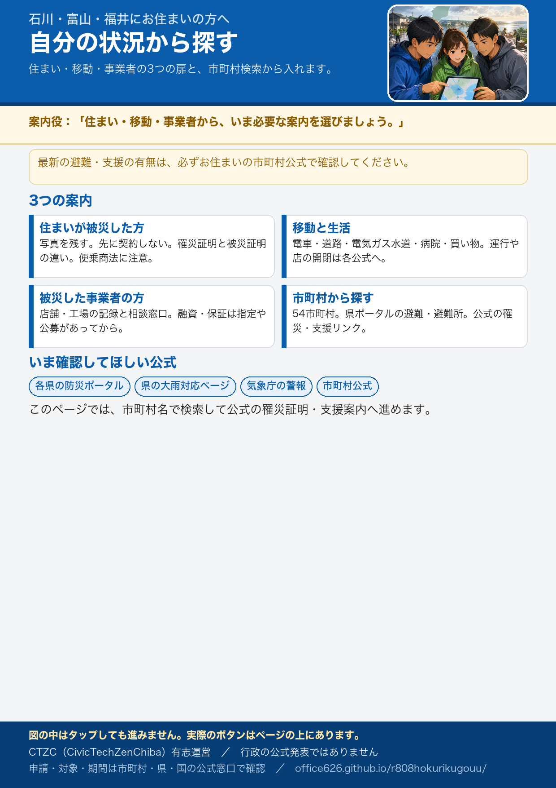

石川・富山・福井にお住まいの方へ
有志運営です。申請は各公式窓口へ。最新は必ず公式で確認してください。
市町村から探す 困りごとから探す これから起きること（時期別）
いま確認してほしい公式情報
各市町村の公式お知らせ・支援策を探す
各市町村公式の罹災証明・災害ごみ・消毒・住まい・ボランティアなどの案内です。今回の大雨専用でないページもあります。受付状態と確認日は有志が見た時点のもの。必ず公式で確認してください。
該当する市町村がありません。

有志運営です。申請は各公式窓口へ。最新は必ず公式で確認してください。
市町村から探す 困りごとから探す これから起きること（時期別）
各市町村公式の罹災証明・災害ごみ・消毒・住まい・ボランティアなどの案内です。今回の大雨専用でないページもあります。受付状態と確認日は有志が見た時点のもの。必ず公式で確認してください。
該当する市町村がありません。
